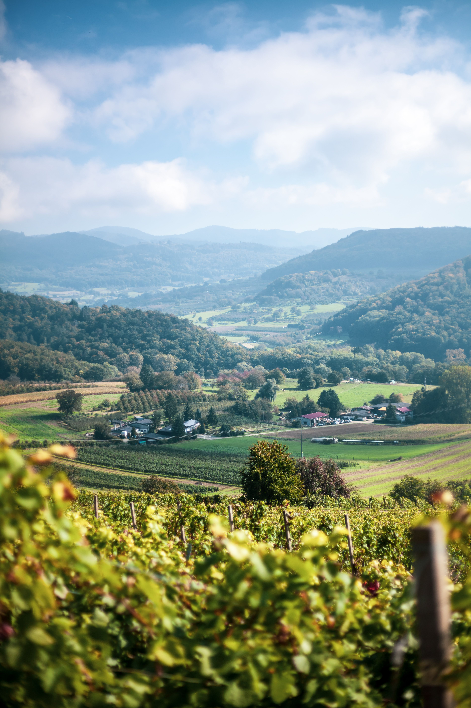
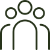
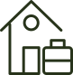
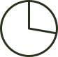
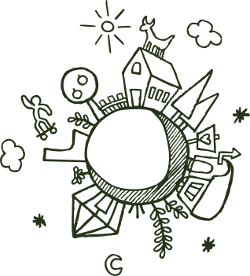
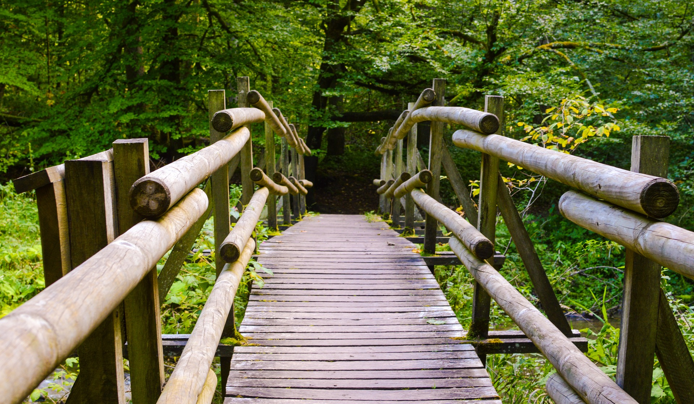
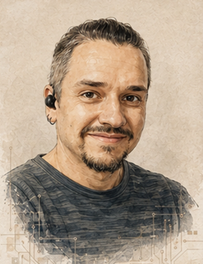
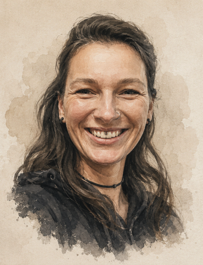
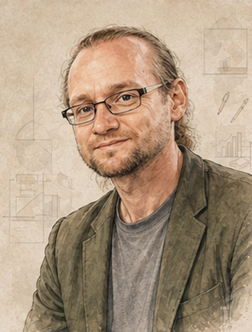
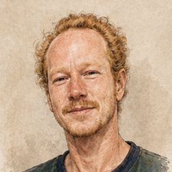

Für Kommunen
- Belebung ländlicher Räume
- sinnvolle Nutzung von Bestand oder Flächen
- neue Begegnungs- und Angebotsstrukturen
- regionale Wertschöpfung
- Attraktivität für Zuzug und Bleiben
Nachhaltig leben, gemeinsam arbeiten, Zukunft gestalten.
Wir entwickeln einen generationenübergreifenden Wohn- und Arbeitsort für etwa 10 bis 15 Personen. Das Projekt verbindet private Wohnbereiche, gemeinschaftliche Infrastruktur, Werkstätten, Co-Working und regionale Angebote in Bildung, Gesundheit, Kultur, Handwerk und Nachhaltigkeit.
Gespräch vereinbarenRegion
ländlicher Raum rund um Leipzig

Umfang
ca. 10 bis 15 Personen

Modell
private Wohnbereiche plus Gemeinschaftsflächen

Nutzung
Wohnen, Werkstätten, Co-Working, Begegnung
Knapper Wohnraum, steigende Lebenshaltungskosten, zunehmende Vereinzelung und ökologische Belastungen zeigen: Zukunftsfähige Wohnformen müssen mehr leisten als nur Unterkunft bieten. Sie können soziale Infrastruktur stärken, Ressourcen gemeinsam nutzen und neue Formen regionaler Zusammenarbeit ermöglichen.
Als überschaubares, gemeinwohlorientiertes Modellprojekt, das Wohnen, Arbeiten, Gemeinschaft und regionale Wirkung miteinander verbindet.
Vereint Verweilen verbindet private Rückzugsräume mit gemeinschaftlich genutzten Flächen und regional wirksamen Angeboten. So entsteht ein Ort, an dem Menschen verschiedener Generationen selbstbestimmt leben, ihre Fähigkeiten einbringen und sich gegenseitig unterstützen können.



Eine eingespielte Gruppe mit komplementären beruflichen Hintergründen bringt das Vorhaben sicher in die Umsetzung.

Thomas Engelmann
M.Sc. Elektro- und Informationstechnik
„Unter den Blinden ist der Einarmige Bandit.“

Stefanie Schmidt
Ergotherapeutin, B.A.
„Wenn ich eine Zeitung wär, würde ich >The Daily Struggle< heißen.“

Tilo Gerlach
Erwachsenenbildung, Grafikdesigner
„Parkour ist wie das Leben - nur völlig anders.“

Robin Dunkel
Tischlermeister
„Wer doppelt kauft, kauft zweimal.“
Gesucht werden Förder- und Finanzierungspartner für Konzeptentwicklung, Machbarkeitsprüfung, Anschubfinanzierung, Erwerb, Pacht, Sanierung oder nachhaltige Infrastruktur.
Gesucht werden Kommunen, die neue Wohn- und Arbeitsmodelle im ländlichen Raum unterstützen möchten — etwa durch Standortvermittlung, fachlichen Austausch, Einbindung in Regionalentwicklung oder Unterstützung bei nächsten Prüfschritten.
Gesucht werden Partner für Rechtsform, Finanzierung, Bau, Fördermittel, soziale Angebote, nachhaltige Nutzungskonzepte und regionale Vernetzung.
Gesucht wird ein geeigneter Standort im ländlichen Raum rund um Leipzig — zum Beispiel ein Hof, Resthof, Mehrfamilienhaus, ehemaliges Gewerbeobjekt, größeres Bestandsgebäude oder Grundstück mit Entwicklungspotenzial.
Sie vertreten eine Kommune, Stiftung oder Förderinstitution, kennen ein geeignetes Objekt oder möchten das Projekt als Partner unterstützen? Wir freuen uns über ein unverbindliches Erstgespräch.
Tilo Gerlach
vereintverweilen@posteo.de
+49 163 74 24 097